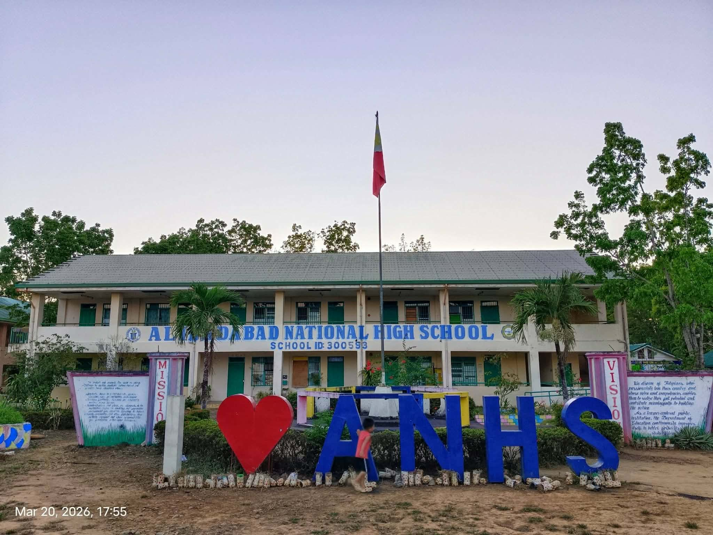
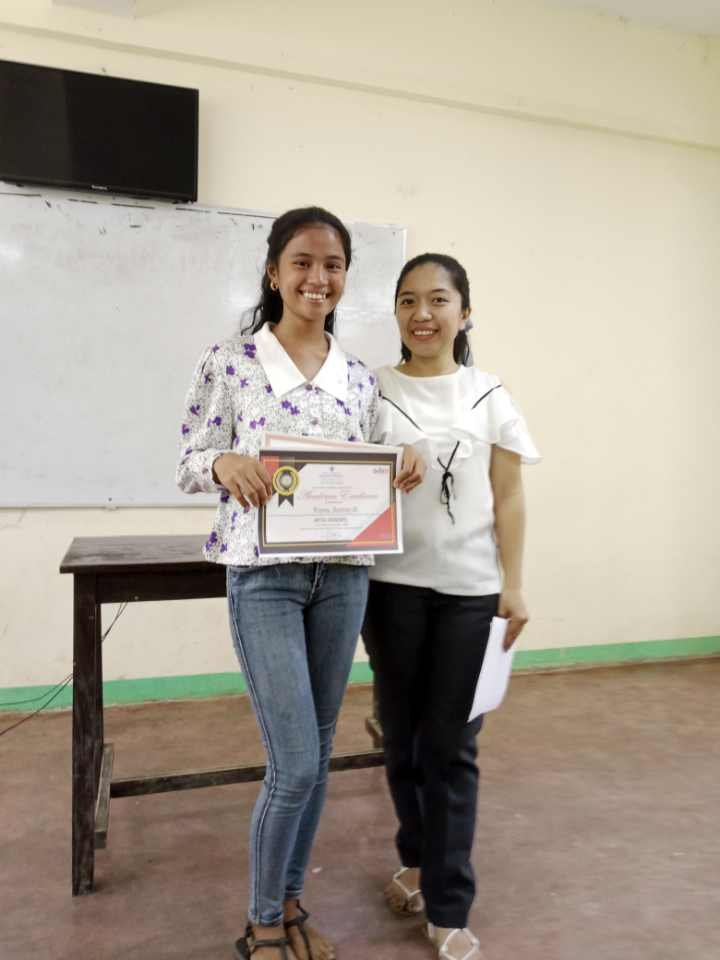
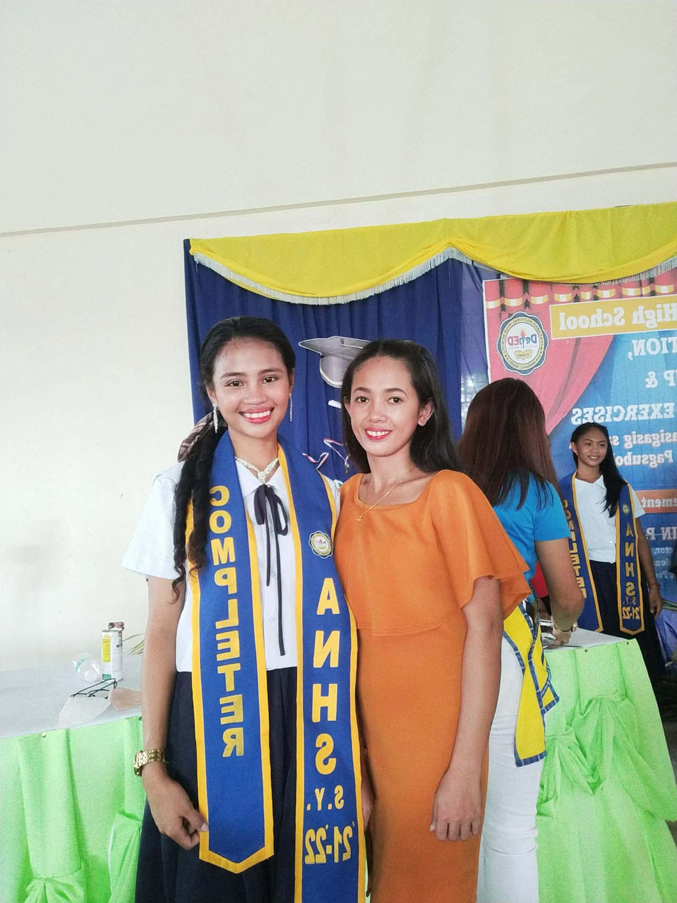

We dream of Filipinos who passionately love their country and whose values and competencies enable them to realize their full potential and contribute meaningfully to building the nation.
As a learner-centered public institution, the Department of Education continuously improves itself to better serve its stakeholders.
Vision:To protect and promote the right of every Filipino to quality, equitable, culture-based, and complete basic education where:


Being a transfer student in high school felt like stepping into a story that was already halfway written.
Everyone already had their circle, their memories, their inside jokes—and I was the new chapter trying to find where I belong.
It wasn’t easy starting over, smiling at strangers, and pretending I wasn’t scared of being left out.
But slowly, I learned how to adjust, how to blend in, and how to turn unfamiliar faces into familiar names.
And even if I wasn’t there from the beginning, I still became part of something—proof that you can always start again, even in the middle of the story.